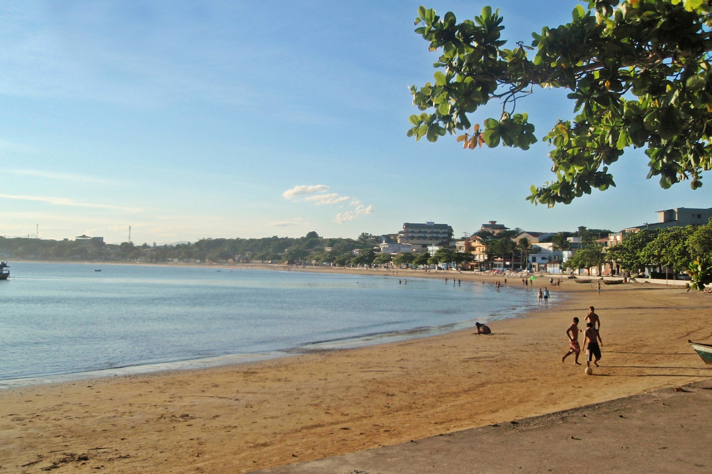
Praia de Ubu
Anchieta - ES
A água que banha a praia possui uma linda cor azul, e a areia é ideal para as crianças poderem se divertir. Possui poucas ondas e uma longa extensão de areia.
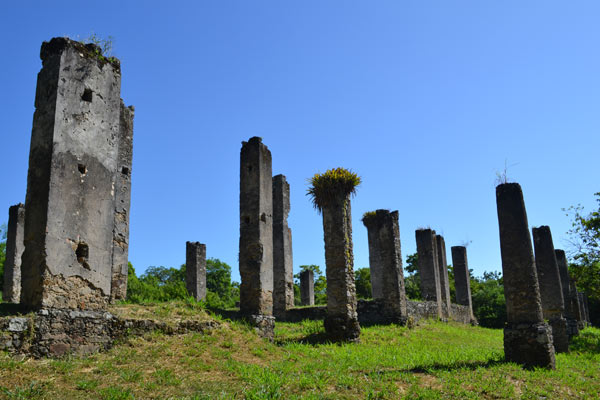
Ruínas do Rio Salinas
Anchieta - ES
As Ruínas do Rio Salinas se situam em meio a natureza, ao lado do Rio Salinas, que é um dos afluentes do Rio Beneventes. Para chegar até as ruínas, pode-se ir tanto pela estrada quanto por embarcação pelo rio.
Museu Vale
Vila Velha - ES
O Museu Vale possui um respeitado acervo com mais de cem anos de história, e também conta com um centro de artes contemporâneas. O lugar perfeito para você que gosta de admirar a nossa história.
Pico da Bandeira
Alto Caparaó - MG / Ibitirama - ES
O Pico da Bandeira é uma divisa natural entre o município de Ibitirama, no Estado do Espírito Santo e do Alto Caparaó, no Estado de Minas Gerais. É o ponto mais alto dos dois Estados, bem como de toda a Região Sudeste do Brasil.
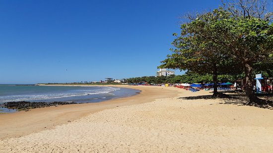
Praia dos Castelhanos
Anchieta - ES
A Praia dos Castelhanos é uma das praias mais urbanizadas do município de Anchieta. Com uma extensão de aproximadamente 2 km de um lindo litoral, a Praia dos Castelhanos conta com quiosques, casas e comércios em sua orla, sendo este um local de alta procura no verão.
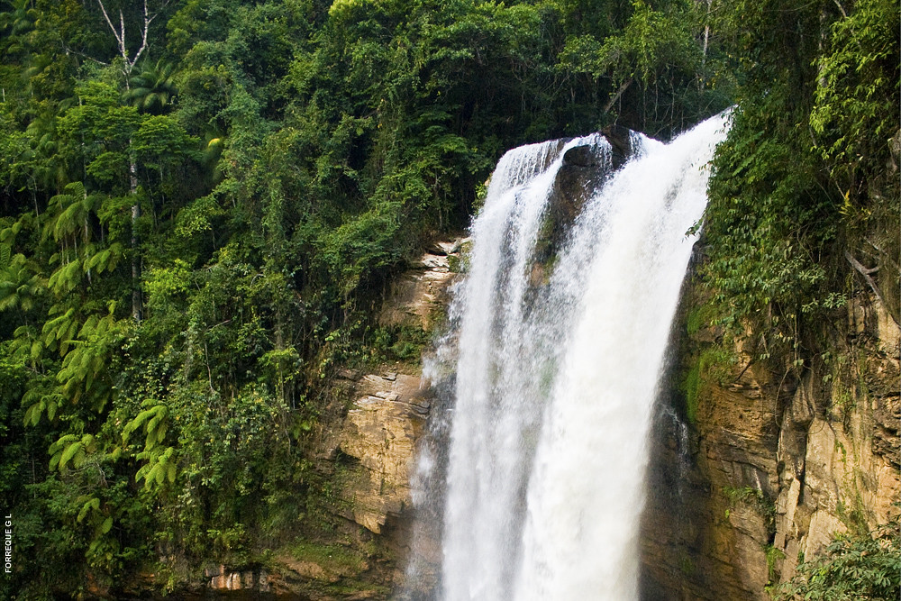
Cachoeira de Matilde
Alfredo Chaves - ES
A Cachoeira de Matilde, também conhecida como Cachoeira do Engenheiro Reeve, possui a maior queda livre de água de todo o Estado do Espírito Santo. A Cachoeira de Matilde conta com uma maravilhosa vista de um vale, além de possuir várias trilhas pela floresta para chegar a outros pontos.
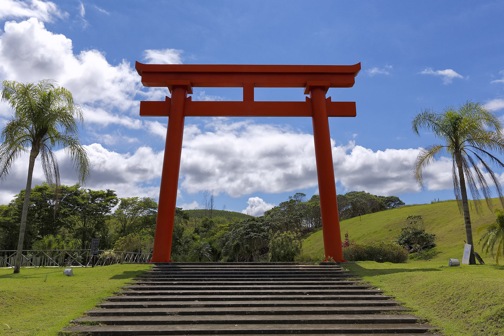
Mosteiro Zen Morro da Vargem
Ibiraçu - ES
O Mosteiro se encontra dentro de uma reserva da Mata Atlântica, no munícipio de Ibiraçu. O Mosteiro Zen Morro da Vargem, foi criado em 1974, sendo o primeiro mosteiro a ser construído no Estado do Espírito Santo.
Dunas de Itaúnas
Itaúnas - ES
As Dunas de Itaúnas são consideradas Patrimônio Mundial da Humanidade pela UNESCO. As dunas começaram a se formar por volta da década de 70, e atualmente podem ter até 30 metros de altura. O local perfeito para você curtir uma nova experiência.
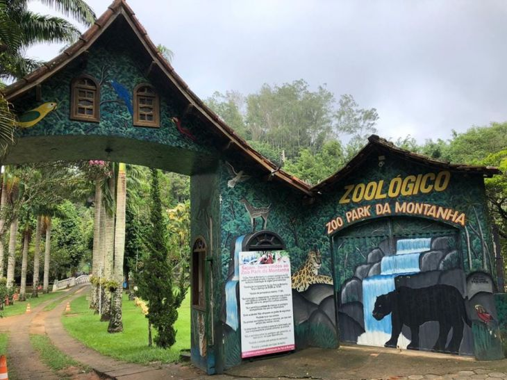
Zoo Park da Montanha
Marechal Floriano - ES
Atualmente, o zoológico Zoo Park da Montanha é o único presente no Estado do Espírito Santo. O zoológico conta com a presença de maravilhosos felinos de grande porte, como leão e onças-pintadas, além de inúmeras outras espécies de animais.
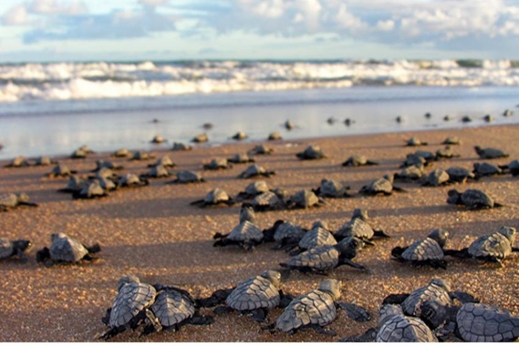
Projeto Tamar - Base Guriri
São Mateus - ES
Bem como outras bases do Projeto Tamar, a base de Guriri tem como objetivo a proteger as tartarugas marinhas ques estão a beira da extinçãono litoral brasileiro. Um ótimo lugar para levar a família para conhecer um pouco sobre a vida marinha.
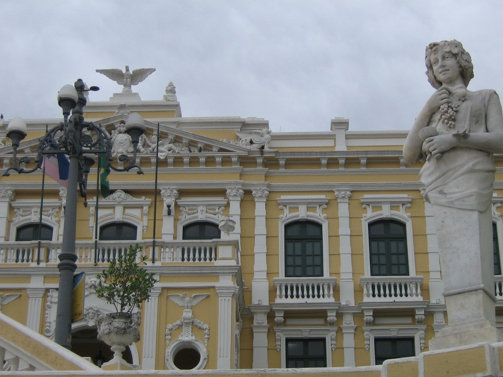
Pálacio Anchieta
Vitória - ES
Localizado em frente ao Porto de Vitória, o Palácio Anchieta atualmente é a sede do poder executivo do Estado do Espírito Santo, mas não foi sempre assim. Este local foi originalmente uma igreja, depois um colégio, que foi passando por várias reformas até chegar ao ponto que conhecemos atualmente.
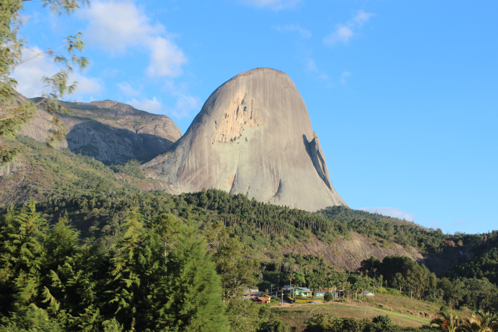
Parque Estadual Pedra Azul
Domingos Martins - ES
O parque abriga um dos principais pontos turísticos do Estado do Espírito Santo, a Pedra Azul com cerca de 1822 metros de altura, sendo este um dos cartões postais mais imponentes de paisagem natural do Estado.
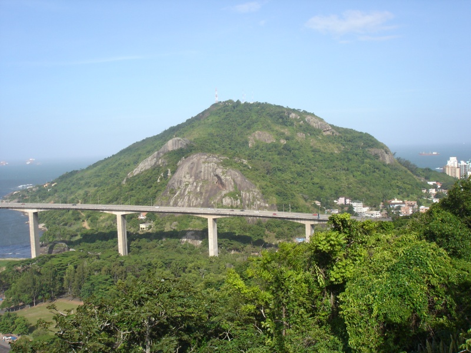
Morro do Moreno
Vila Velha - ES
O Morro do Moreno era usado nos séculos anteriores para vigiar os navios que adentravam na Baía de Vitória. Atualmente, o Morro do Moreno é visitado por turístas para a realização de esportes, como trilhas, rapel, tirolesa e voo de parapente.
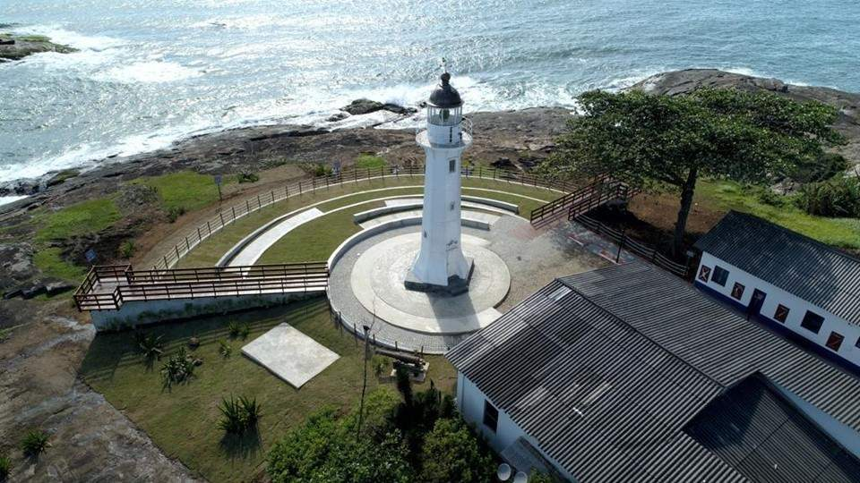
Farol de Santa Luzia
Vila Velha - ES
O Farol de Santa Luzia, possui 12 metros de altura e uma luz com capacidade luminosa de alcançar até 27,78 km de distância. O farol, inaugurado em 1871 pelo então Imperador Dom Pedro II.
Convento da Penha
Vila Velha - ES
O Convento da Penha teve a sua construção feita no alto de um penhasco de 154 metros de altitude por volta dos anos de 1558, sendo este considerado um dos santuários religiosos mais antigos do Brasil.
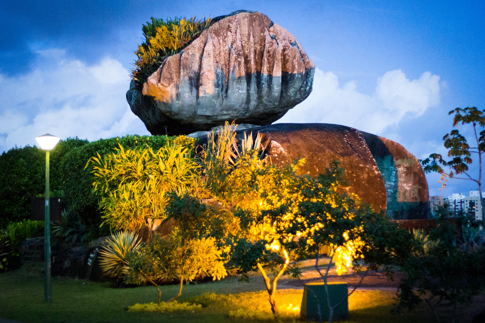
Parque Pedra da Cebola
Vitória - ES
Anos atrás, o local onde está localizado o Parque Pedra da Cebola era propriedade da mineradora Vale, conhecida como Pedreira de Goiabeiras. Em 1997 ocorreu a implantação do parque como forma de recuperação da área degradada por conta das ativades que eram realizadas.
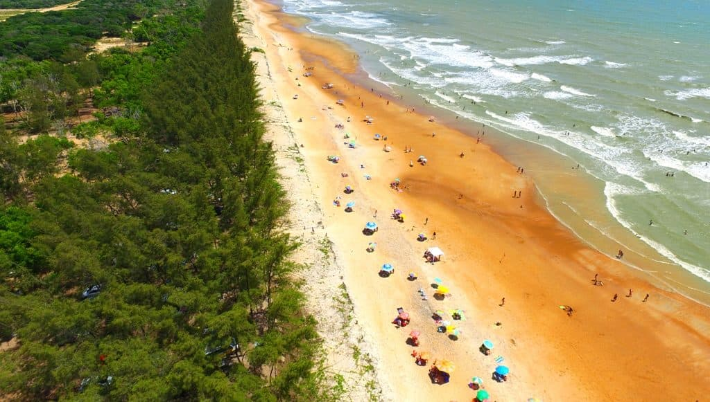
Ilha de Guriri
São Mateus - ES
A Ilha de Guriri é a maior ilha do Estado do Espírito Santo, possuindo 102 km² de área e 42 km de extensão de praia. A ilha ainda conta com inúmeras outras atrações, como trilhas, áreas de surf e bosque com área para fazer churrasco.